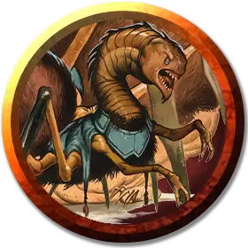

Неоги-пират
Neogi Pirate
Маленькая Аберрация, обычно законно-злая

Класс Доспеха 16 (кираса)
Хиты 33 (6к6 + 12)
Скорость 30 футов, лазая 30 футов
| мод | спас | ||
|---|---|---|---|
| СИЛ | 6 | −2 | −2 |
| ЛОВ | 15 | +2 | +2 |
| ТЕЛ | 14 | +2 | +2 |
| мод | спас | ||
|---|---|---|---|
| ИНТ | 13 | +1 | +1 |
| МДР | 12 | +1 | +1 |
| ХАР | 15 | +2 | +2 |
Навыки Восприятие +3, Скрытность +4
Чувства тёмное зрение 60 футов, пассивное Восприятие 13
Языки Общий, Глубинная речь, Подземный
Опасность 3 (700 опыта)
Бонус мастерства +2
Особенности
Ментальная стойкость. Неоги совершает с преимуществом спасброски от очарования и испуга, его невозможно магически усыпить.
Паучье лазание. Неоги может лазать по сложным поверхностям, включая потолки, без совершения проверок характеристик.
Действия
Мультиатака. Неоги совершает одну атаку Укусом и две атаки Когтями.
Укус. . Рукопашная атака оружием: +4 к попаданию, досягаемость 5 фт., одна цель. Попадание: 6 (1к6 + 3) колющего урона плюс 14 (4к6) урона ядом. Цель должна преуспеть в спасброске Телосложения Сл 12, иначе станет отравленной на 1 минуту. Цель может повторять спасбросок в конце каждого своего хода, оканчивая на себе этот эффект при успехе.
Коготь. .Рукопашная атака оружием: +4 к попаданию, досягаемость 5 фт., одна цель. Попадание: 6 (1к6 + 3) рубящего урона.
Описание
Неоги-пираты — это взрослые неоги, служащие членами экипажа на борту ночных пауков (см. «Путеводитель астрального путешественника») и других судов, управляемых неоги.
В обществе неоги нет различий между индивидами, кроме способности данного существа управлять окружающими. У них нет понимания эмоциональных аспектов бытия, что присуще людям и другим похожим существам. Ненависть — такое же чуждое чувство для неоги, как и любовь, а проявление лояльности в отсутствие авторитета — глупость.
Неоги-пираты (и в целом взрослые неоги) отмечают себя и захваченных ими существ с помощью красок, преобразующей магии и других знаков, призванных обозначить ранг, достижения и личность лидера. Благодаря этим знакам неоги определяют положение друг друга в иерархии и должны подчиняться вышестоящим, иначе им грозит суровое наказание.
Неоги
Неоги выглядит как паук огромных размеров с шеей и головой угря. Он может отравить тело и разум цели и способен подчинить своей воле даже существ, физически превосходящих его.
Неоги обычно обитают в отдаленных закоулках Материального плана, а также на Астральном и Эфирном планах. Они давно покинули свой родной мир, чтобы завоевать и поглотить существ иных сфер. В эту эпоху они получили власть над бурыми увальнями [umber hulk] и использовали их для строительства изящных паукообразных кораблей, способных пересечь Мультивселенную.